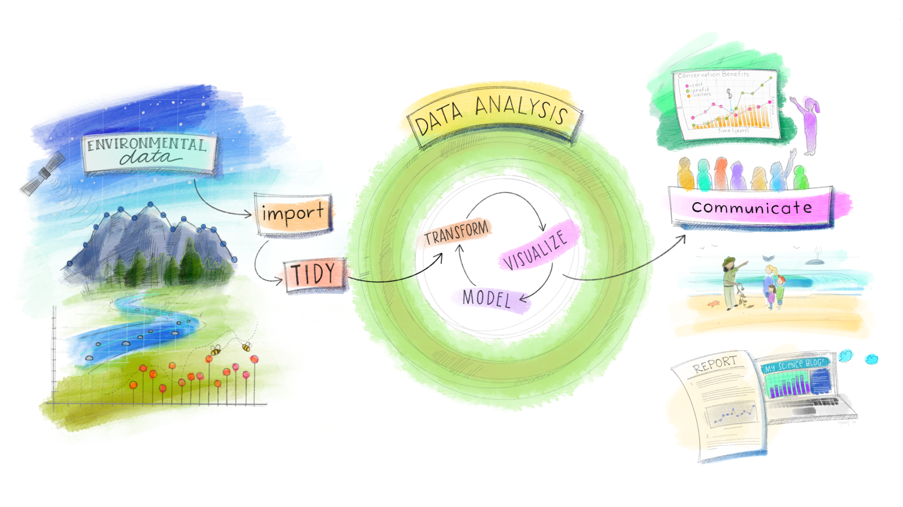

Texto e código
Escrevendo documentos Científicos com R
Grupo de Estudos de Ecologia Quantitativa (GEEQ)
Beatriz Milz
Maio de 2022
Ministrante
Beatriz Milz
Professora na Curso-R.
Doutoranda em Ciência Ambiental (PROCAM/IEE/USP)
Co-organizadora da R-Ladies São Paulo üíú
Curso-R
Filosofia de código aberto!


Cursos que a Curso-R oferece:
Use a barra de rolagem do navegador para ver tudo :D
Alinhamentos de expectativas
Conteúdo introdutório!
Falaremos um pouco sobre:
O que é o R? RStudio? RStudio Cloud?
Introdução à reprodutibilidade
O que são projetos no RStudio?
O que é o pacote RMarkdown?
Parte prática no RStudio Cloud
O que é o R?
Linguagem de programação de código aberto
Muito usada por pessoas da área estatística, em pesquisas científicas, para analisar dados, etc.
A comunidade da linguagem R é muito ativa!
O que é a RStudio?
Mais conhecido pela IDE (integrated development environment) RStudio, o ambiente de desenvolvimento que utilizamos para editar e executar os códigos em R.
É uma companhia criada em 2009
Tem uma grande equipe de pessoas que trabalham no desenvolvimento de pacotes em R
Organizam a RStudio Conference (em 2020 com mais de 2200 participantes)
É muito próxima da comunidade
O que é o RStudio Cloud?
É a IDE RStudio que podemos utilizar diretamente do navegador (sem que seja necessário instalar nada).

Pré-requisitos
Nesta atividade:
Para usar no dia-a-dia:
Ciclo da ciência de dados
Fonte: Conceito do ciclo de ciência de dados apresentado por Hadley Wickham no livro R for Data Science, ilustração por Allison Horst.
Ciclo da ciência de dados com R

Fonte: Conceito do ciclo de ciência de dados apresentado por Hadley Wickham no livro R for Data Science, figura elaborada pela equipe da Curso-R.
Introdução ao conceito de reprodutibilidade
“É um conceito que não tem uma definição única e comum”. (Gundersen, 2021)
“Para alguém fazer uma afirmação científica legítima, ele deve ser capaz de reproduzir totalmente seus resultados a partir de seus dados brutos (e de preferência outros devem ser capazes de reproduzi-los também)”. Dr. John Paul Helveston
Reprodutibilidade
Quais fatores contribuem com pesquisa não reprodutível?

Fonte: Baker (2016)
Reprodutibilidade
“Reprodutibilidade é como escovar os dentes. Isso é bom para você, mas leva tempo e esforço. Depois de aprender, torna-se um hábito.” - Irakli Loladze, Bryan College of Health Sciences em Lincoln, Nebraska.
Baker, M. 1,500 scientists lift the lid on reproducibility. Nature 533, 452–454 (2016). https://doi.org/10.1038/533452a
Exemplos:
Boas práticas, como: não usar caracteres especiais nos caminhos, variáveis, nomes de coluna, etc; armazenar os arquivos de forma consistente.
Registrar a versão do R e dos pacotes utilizados
Documentar a análise
Controlar a versão dos arquivos
Projetos do RStudio
O RStudio permite a criação de Projetos.
O projeto é uma pasta no computador, onde devemos armazenar todos os arquivos usados ou criados em uma análise. Essa pasta irá conter também um arquivo com o nome do projeto e a extensão
.Rproj.Para cada análise, lembre-se de criar um
.Rprojcorrespondente.Usar projetos no RStudio facilita a organização dos arquivos, posteriormente sincronizar com o GitHub, entre outros.

Criando um projeto
Criando um projeto em uma nova pasta:
File > New Project > New Directory > New Project
Dê um nome para seu projeto (será o nome da pasta), escolha a pasta no seu computador, e clique em
Create Project.
Diretório de trabalho/Working Directory
- O diretório de trabalho é a pasta em que o R irá:
- procurar arquivos na hora de ler informações;
- gravar arquivos na hora de salvar objetos.
- Quando usamos Projetos do RStudio, o nosso diretório de trabalho é a pasta principal do projeto.
Diretório de trabalho/Working Directory
- A função
getwd()serve para conferir o diretório de trabalho:
- A função
setwd()serve para alterar o diretório de trabalho. NÃO É RECOMENDADO O USO! Isso torna o código não reprodutível.
Caminhos
Caminhos são textos que representam o endereço do arquivo no computador.
É muito importante entender como funcionam! Caso contrário, ficará difícil fazer coisas como importar dados para o R.
Caminhos absolutos e relativos
Caminhos absolutos: tem início na pasta raiz do seu computador/usuário. NÃO É RECOMENDADO O USO! Isso torna o código não reprodutível.
Caminhos relativos: tem início no diretório de trabalho da sessão. Caso você esteja usando projetos, os caminhos relativos tem início na pasta inicial do projeto.
Utilize sempre que possível caminhos relativos.
Exemplos de caminhos
Exemplos acessando o mesmo arquivo:
Caminho absoluto:
"/Users/beatrizmilz/GitHub/2022-curso-de-verao-ime-usp-relatorios/docs/slides/img/rprojs.png"Caminho relativo:
"docs/slides/img/rprojs.png"here
O pacote here também possui funções úteis para escrever caminhos:
Pacote R Markdown
Criado e mantido pela RStudio
Princípio: arquivos onde escrevemos textos e marcamos com
markdown, mas também podemos adicionar códigos que são executados.Extensão
.RmdPossibilita a utilização de códigos
R,Python,Markdown,HTML,CSS,SQL, e outros em um único arquivo.A reprodutibilidade é algo importante para o R Markdown.
Pacote R Markdown
A comunidade de R, e a equipe da RStudio, desenvolveram outros pacotes que integram bem com R Markdown para gerar diversos produtos de análise de dados diferentes, com arquivos .Rmd.

Fonte: Pacote rmarkdown
Exemplos
| pacote | desc | exemplos |
|---|---|---|
Blogs e sites |
||
Blogs e sites |
||
Livros |
||
Apresentações |
||
Currículos, cartas e trabalhos acadêmicos |
||
Tutoriais interativos |
||
Dashboards estáticos |
||
Artigos científicos |
||
Outros exemplos |
Slide adaptado do curso de Relatórios automatizados, da Curso-R.
Outros pacotes:
Podemos criar templates
Vamos começar?
Indo além do R Markdown simples
Adicionar equações
Podemos adicionar equações em LaTeX. Dica: Equações em LaTeX no Mettzer, ou pesquise no google por “Equações em LaTeX”.
Equação centralizada: Envolver a equação por dois $.
\[{\text{Média}=\frac {a_{1}+a_{2}+\cdots +a_{n}}{n}}\]
Equação junto ao texto: Envolver a equação por um $.
Ou também na linha \({\text{Média}=\frac {a_{1}+a_{2}+\cdots +a_{n}}{n}}\), junto ao texto!
Código Markdown:
Citar o R - Função citation()
> citation()
To cite R in publications use:
R Core Team (2021). R: A language and environment for
statistical computing. R Foundation for Statistical
Computing, Vienna, Austria. URL https://www.R-project.org/.
A BibTeX entry for LaTeX users is
@Manual{,
title = {R: A Language and Environment for Statistical Computing},
author = {{R Core Team}},
organization = {R Foundation for Statistical Computing},
address = {Vienna, Austria},
year = {2021},
url = {https://www.R-project.org/},
}
We have invested a lot of time and effort in creating R,
please cite it when using it for data analysis. See also
‘citation("pkgname")’ for citing R packages.Citar pacotes
Podemos gerar um .bib com as referências de pacotes utilizados usando a função knitr::write_bib():
Exemplo
@Manual{R-tidyverse,
title = {tidyverse: Easily Install and Load the Tidyverse},
author = {Hadley Wickham},
year = {2021},
note = {R package version 1.3.1},
url = {https://CRAN.R-project.org/package=tidyverse},
}
@Article{tidyverse2019,
title = {Welcome to the {tidyverse}},
author = {Hadley Wickham and Mara Averick and Jennifer Bryan and Winston Chang and Lucy D'Agostino McGowan and Romain François and Garrett Grolemund and Alex Hayes and Lionel Henry and Jim Hester and Max Kuhn and Thomas Lin Pedersen and Evan Miller and Stephan Milton Bache and Kirill Müller and Jeroen Ooms and David Robinson and Dana Paige Seidel and Vitalie Spinu and Kohske Takahashi and Davis Vaughan and Claus Wilke and Kara Woo and Hiroaki Yutani},
year = {2019},
journal = {Journal of Open Source Software},
volume = {4},
number = {43},
pages = {1686},
doi = {10.21105/joss.01686},
}Como citar no .Rmd
- Formas de usar os rótulos gerados no arquivo
.Rmd:
| forma_de_citar | resultado |
|---|---|
| @tidyverse2019 | Wickham et al. (2019) |
| [@tidyverse2019; @R-tidyverse] | (Wickham et al. 2019; Wickham 2021) |
| Em -@tidyverse2019, Hadley e colaboradores… | Em 2019, Hadley e colaboradores… |
| Segundo Hadley Wickham e colaboradores [-@tidyverse2019] | Segundo Hadley Wickham e colaboradores (2019) |
Formatação das referências
O conte√∫do do arquivo
.bibé formatado a partir de um arquivo.csl(Citation Style Language).Devemos informar caminho até o arquivo CSL no YAML, por exemplo:
csl: template/abnt.cslLugares para baixar arquivos CSL:
Usar um modelo para word
Em alguns casos, somos obrigados a enviar arquivos
.docx(ex: algumas revistas científicas apenas aceitam esse tipo de arquivo).Podemos informar um template de arquivo word como referência. As regras de formatação serão copiadas. Não funciona perfeitamente!
output:
bookdown::word_document2:
reference_docx: template/modelo.docxExportar um .docx tunado
Em alguns casos, somos obrigados a enviar arquivos
.docx(ex: algumas revistas científicas apenas aceitam esse tipo de arquivo).Exemplo de YAML:
output:
bookdown::word_document2:
reference_docx: template/modelo.docx
number_sections: false
bibliography: [referencias/packages.bib, referencias/zotero.bib]
csl: template/abnt.cslReferência cruzada - Elementos
- Funciona com outputs que são derivados do pacote bookdown.
- Ex:
bookdown::html_document2,bookdown::word_document2
- Ex:
- Figuras, tabelas, equações, etc:
- Usamos o rótulo do chunk (ou nome) onde a tabela ou imagem foi criada para fazer a referência cruzada.
- Ex:
\@ref(fig:rotulo-da-imagem),\@ref(tab:rotulo-da-tabela), ou\@ref(eq:rotulo-da-equacao). - Referência: https://bookdown.org/yihui/rmarkdown-cookbook/cross-ref.html
- Ex:
- Usamos o rótulo do chunk (ou nome) onde a tabela ou imagem foi criada para fazer a referência cruzada.
Referência cruzada - Capítulos/Seções
- Funciona com outputs que são derivados do pacote bookdown.
- Ex:
bookdown::html_document2,bookdown::word_document2
- Ex:
Referência cruzada - Capítulos/Seções
- Capítulos:
- Para fazer referência cruzada em capítulos/seções, devemos adicionar um rótulo para o capítulo, que deverá ser escrito logo após a cabeçalho (que delimitamos com
#,##, etc). Para referenciar no texto, devemos usar\@ref(rotulo-do-capitulo).- Exemplo da criação do rótulo:
# Introdução {#introducao} - Exemplo de uso no texto:
\@ref(introducao). - Referência: https://bookdown.org/yihui/bookdown/cross-references.html
- Exemplo da criação do rótulo:
- Para fazer referência cruzada em capítulos/seções, devemos adicionar um rótulo para o capítulo, que deverá ser escrito logo após a cabeçalho (que delimitamos com
Outras referências interessantes:
Em Português:
Em Inglês:
Tom Mock | A Gentle Introduction to Tidy Statistics in R | RStudio (2019)
Tom Mock | R Markdown Advanced Tips to Become a Better Data Scientist | RStudio
Introduction to bioinformatics - Chapter 8 Reproducible research - Laurent Gatto
Slides por Beatriz Milz, feitos com Quarto. Códigos e materiais disponíveis no GitHub. Licença de uso: CC-BY-SA.